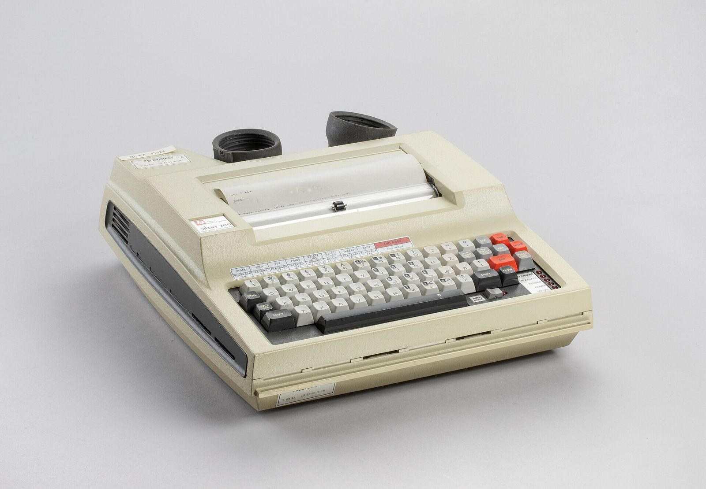
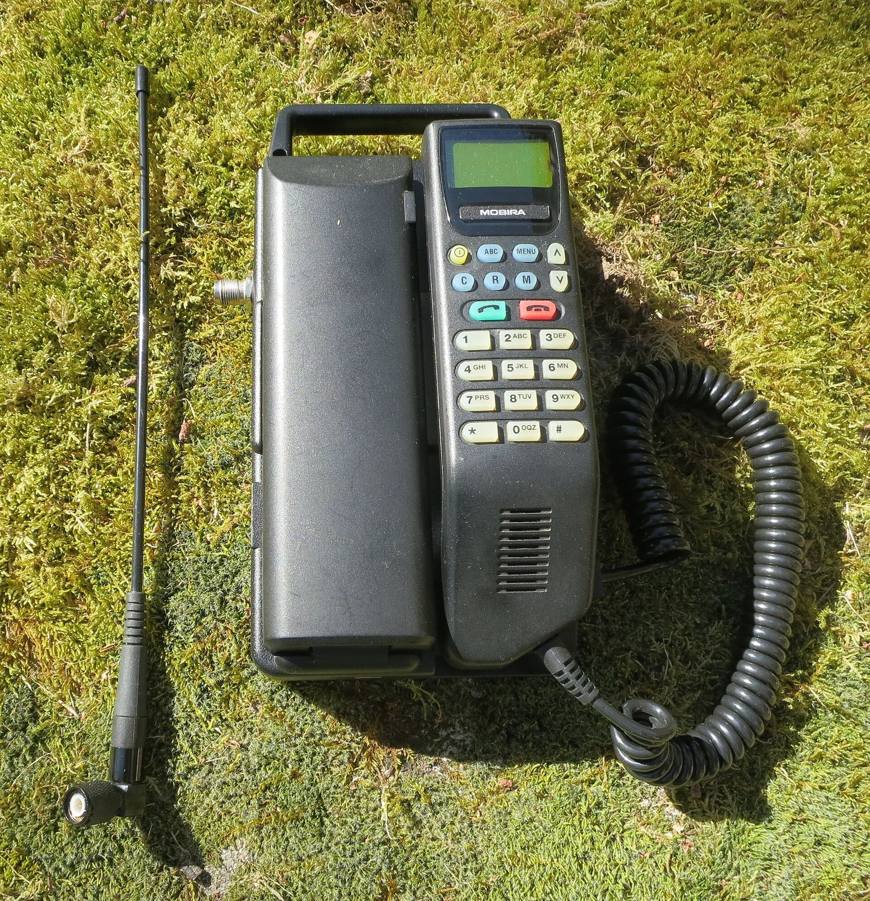
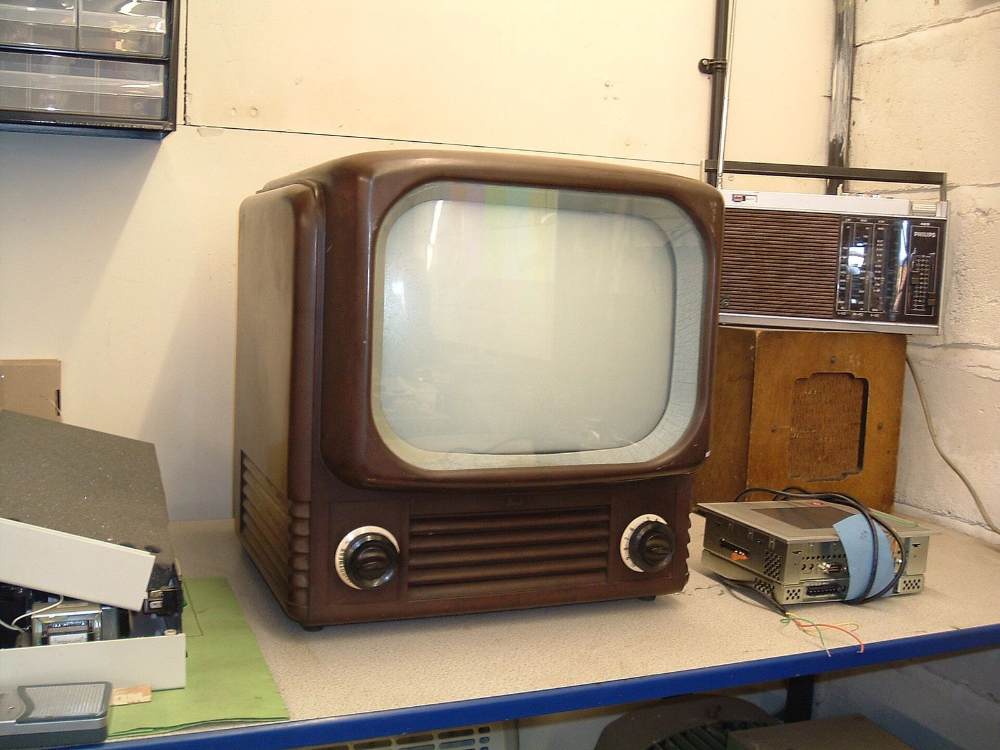
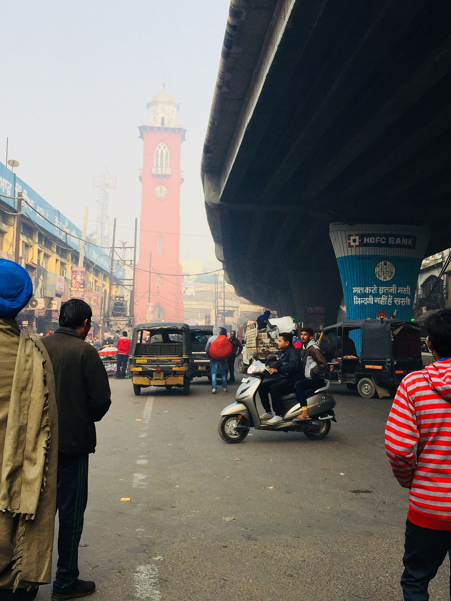

What we build, and what it costs.
Six services, one studio. Each one is quoted against a written scope, shipped on a date you agreed to, and handed over in full.
Code, accounts and all. Most projects use two or three of these together, and that is still one quote and one team.
Pick the closest. We scope the rest.
You do not need to know which of these your project is. Describe the problem and we will tell you what it takes to solve it, including the parts you had not thought of yet.
Websites & landing pages
Marketing sites, product catalogues and campaign pages, built mobile-first and wired to a CMS your own team edits without calling us. Page speed, structured data and sitemaps are part of the build, not a fix we sell you six months later.Next.js, CMS, SEO, hosting

CRM & custom software
Leads, pipelines, quotations, billing, inventory and reporting, shaped around how your team already works instead of a rented template you bend towards. Role-based access, so a branch manager and an accountant open the same system and see different screens.Pipelines, billing, roles, reports

Mobile apps
One codebase for both stores, with native modules where the platform actually demands them. We handle design, push notifications, offline behaviour, signing keys, store listings and the review process, then transfer the developer accounts to your name.iOS, Android, store release

TV & living-room apps
The ten-foot screen is its own discipline — the only input is a remote, and focus order is the entire interface. We build and submit for Apple TV, Android TV, Fire TV and LG webOS, including video playback, subscriptions and second-screen sign-in.tvOS, Android TV, webOS

Google presence
Business Profile, the Maps pin, opening hours, photos, reviews, Search visibility, Analytics and Workspace email — set up together so a customer searching your name finds one correct listing instead of three stale ones with the old address.Business Profile, Maps, Workspace

Integrations & automation
Payment gateways, WhatsApp Business API, accounting exports, ERP and courier APIs connected properly, with retries and error handling that a person will actually see. One order stops being typed into three systems by three people.Payments, WhatsApp API, ERP
The same four things, whatever we build.
A five-page website and a CRM running six branches are very different jobs. These four do not change between them, and they are not line items you pay extra for.
Fixed
A written scope first, then one price against it. If we misjudged the work, we absorb it — that is what fixed means.
Weekly
A working build on a live link every week from week one. You test real software on your own phone, not screenshots in a deck.
100%
Source code, repositories, hosting, domains and store accounts transferred to your name at launch. Nothing stays locked to us.
30 days
Anything broken in the first month after go-live is fixed at no cost. Support after that is a plan you choose, never an automatic renewal.
How we price a project.
Most quotes go wrong in the same place: nobody wrote down what finished means.
How we scope a project
Before we price anything, we turn your requirement into a scope document — the screens, the user roles, the platforms we ship to, the systems it has to talk to, and the things that are deliberately not in this phase. It takes about a day and it costs you nothing.
About a day, free
Why the price is fixed
An hourly rate makes our inefficiency your bill. We would rather do the thinking first and commit to a number. Once you approve the scope, the price and the launch date are locked. If we underestimated the build, that is ours to absorb. If you want something that was never in the scope, we quote it separately and you decide — nothing gets added quietly and nothing appears on an invoice you have not seen.
Price and date locked
No open-ended discovery
We do not sell a paid discovery phase that ends in a slide deck. Scoping is a WhatsApp thread and one call, usually under an hour. If a project is genuinely too large to price in one go, we split it into phases and quote the first one only, so you see working software before you commit to the rest of it.
One thread, one call
What we need to quote.
Four things. A paragraph is enough for each.
- A paragraph about the problem, not a specification. What should it do, and who uses it.
- The screens that matter to you, if you already know — web, phone, TV, in-store.
- Anything it has to connect to: Tally, an ERP, a payment gateway, an existing database.
- The date you are working towards, and whether that date can move.
How an engagement runs
- Typical timeline
- 4–6 weeks
- Quote turnaround
- 1 working day
- Scope document
- Free
- What you own
- All of it
- Support after launch
- 30 days free
Send the requirement. Get the price tomorrow.
One message describing the problem is enough to begin. We reply with the questions that actually change the estimate, then a written scope and a fixed quote — usually inside one working day.